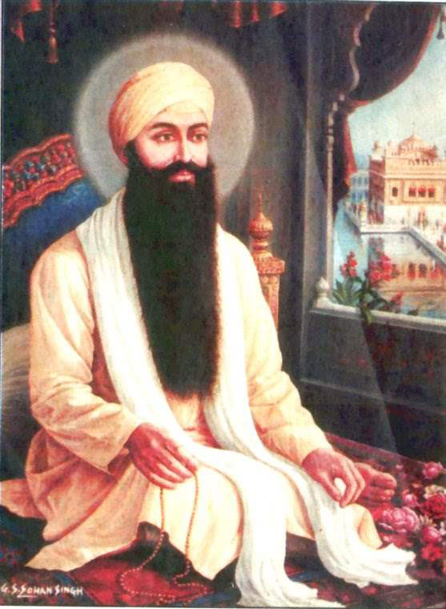

<center><body background="images1/khlihoij.png"width="1000"><TABLE width="1000" BORDER="0" cellpadding="0" cellspacing="0">
<tr><td colspan="2"><center></center></td></tr>
<tr>
<td><br>

<a href="images1/ram.png" width="1000"><center> </center>
</td>
<td>
<FONT COLOR="#741111"><FONT SIZE="5">
The Fourth Guru - Guru Ram Das ji (1574 - 1581)
</font>
<br>
<FONT COLOR="#741111"><FONT SIZE="4">
Name :Bhai Jetha (Ram Das Ji)<br>
Parents : Hari Das & Anup Devi(Daya Kaur)<br>
Born : October 9, 1534, Lahore<br>
Siblings :--N.A--<br>
Spouse : Bibi Bhani<br>
Children : Prithi Chand, Mahadev and Guru Arjan Dev<br>

Guruship : 1574 - 1581<br>
Joti Jot :September 1, 1581<br>
Age :46 years<br>
Bani :638 hymns in 30 ragas ,246 Padei 138 Saloks, 31 Ashtpadis and 8 Vars<br>
</td>
</tr>


<tr><td colspan="2">&nbsp;&nbsp;&nbsp;&nbsp;&nbsp;&nbsp;
<FONT COLOR="#741111"><FONT SIZE="4">
<br>
Guru Ramdas Sahib (Jetha ji) was born at Chuna Mandi, Lahore (in Pakistan), on Kartik Vadi 2nd, (25th Assu) Samvat 1591 (September 24, 1534). Son of Mata Daya Kaur ji (Anup Kaur ji) and Baba Hari Das ji Sodhi Khatri was very handsome and promising child. His parents were too poor to meet even the daily needs and he had to earn his bread by selling boiled grams. His parents died when he was just 7 year old. His grandmother (mother's, mother) took him to her native village Basarke. He spent five years at village Basarke earning his bread by selling boiled grams. According to some chronicles, once Guru Amardas Sahib came village Basarke to condole with the grandmother of (Guru) Ramdas Sahib at the death of her son-in-law and developed deep affection for (Guru) Ramdas Sahib. Along with grandmother he left for Goidwal Sahib to settle there. There he resumed his profession of selling boiled grams and also began to take part in the religious congregation held by Guru Amardas Sahib. He also made active participation in the development of Goindwal Sahib.

(Guru) Ramdas Sahib was married to Bibi Bhani Ji (daughter of Guru Amardas Sahib). She bore him three sons: Prithi Chand Ji, Mahadev Ji and Arjan Sahib (Guru) Ji. After the marriage he stayed with his father-in-law and deeply associated himself with the Guru Ghar activities (Sikhism). He commanded full confidence of Guru Amardas Sahib and often accompanied him when the latter went on long missionary tours to different parts of India. 

(Guru) Ramdas Sahib was a man of considerable merit. He became famous for his piety, devotion, energy and eloquence. Guru Amardas Sahib found him capable in every respect and worthy of the office of Guruship and installed him as Fourth Nanak on september 1, 1574. Guru Ramdas Sahib laid the foundation stone of Chak Ramdas or Ramdas Pur, which is now called Amritsar. For this purpose he purchased land from the zamindars of the villages: Tung, Gilwali and Gumtala, and began digging of Santokhsar Sarover. Later on he suspended the work on Santokhsar and concentrated his attention on digging Amritsar Sarovar. Bhai Sahlo Ji and Baba Budha Ji, the two devoted Sikhs were assigned the supervising work. 

The new city (Chak Ramdas Pur) flourished soon as it was situated at the centre of international trade routes. It grew into an important center of trade in Punjab after Lahore. Guru Ramdas Sahib himself invited many merchants and artisans from the different walks of life and trades. Later on, it proved to be step of far-reaching importance. It provided a common place of worship to the Sikhs and paved the way for the future guidelines for the Sikhism as a different religion. Guru Ramdas Sahib introduced Masand system in place of Manji system and this step played a great role in the consolidation of Sikhism.

Guru Ramdas Sahib strengthened the Sikhism a step further by composing Four Lawans and advised the Sikhs to recite them in order to solemnize the marriages of their children. Thus he introduced a new matrimonial system based upon Sikhism instead of Hindu's Vedi system. Thus this distinct marriage code for the Sikhs separated them from the orthodox and traditional Hindu system. also made rapprochement with different sects of Udasis through Baba Shri Chand Ji. He, like his predecessors carried forward the tradition of Guru ka Langer. Superstitions, caste system and pilgrimages were strongly decried.

He wrote 638 hymns in 30 ragas, these include 246 Padei 138 Saloks, 31 Ashtpadis and 8 Vars and are a part of Guru Granth Sahib. He nominated his youngest son (Guru) Arjan Sahib as Fifth Nanak. After this he left Amritsar and retired to Goindwal Sahib. There, after a few days he passed away for heaven on Bhadon Sudi 3rd (2nd Assu) Samvat 1638 (September 1, 1581).

